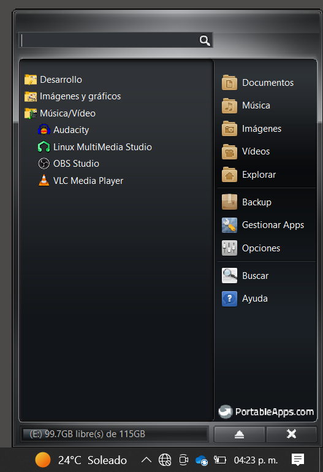

Apoyándonos en la herramienta de portable apps, nos podemos encontrar con una serie de pogramas muy interesantes que nos ayudan para desarrollar efectos especiales de audio, Uno es Audacity y el otro es LMMS
Lo primero es descargarlos e instalarlos en versión portable y se veran desde la aplicación así
